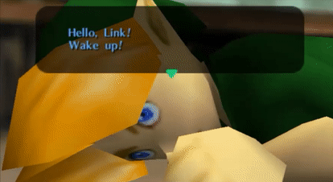
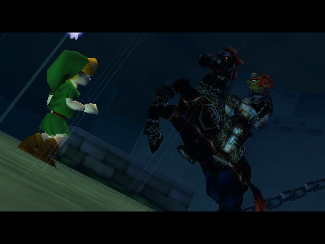
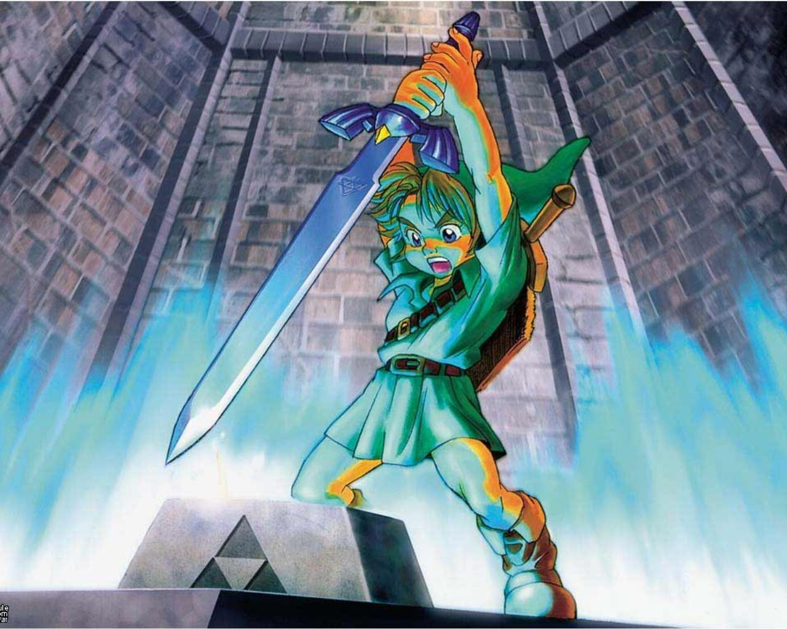
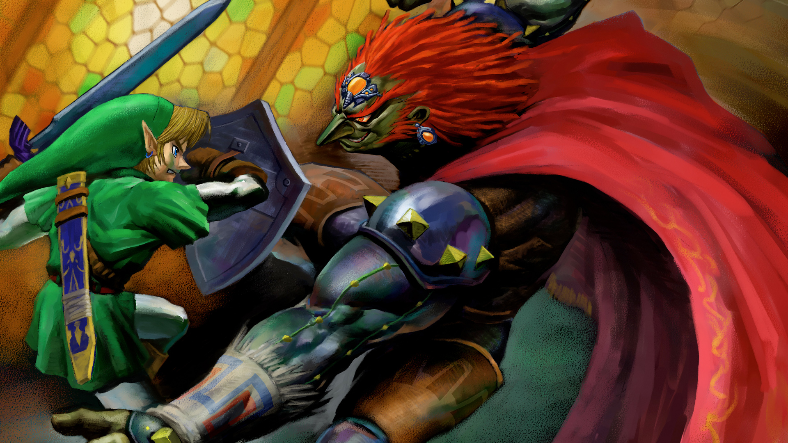
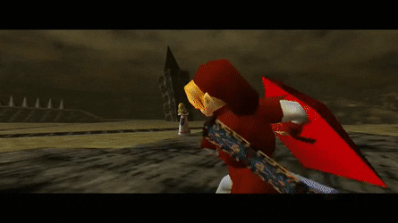

Ocarina of Time se passa no reino fictício de Hyrule, local da maioria dos jogos da série, e, na cronologia fictícia, ocorre depois de Four Swords e antes de A Link to the Past, Majora's Mask e The Wind Waker, tendo sido considerado o ponto de partida da série até o lançamento de Skyward Sword. O Campo de Hyrule serve como centro de ligação à outras áreas periféricas, que têm topografias variadas e são habitadas por diferentes raças.
 A fada Navi desperta Link de um pesadelo no qual ele testemunha um homem de armadura negra perseguindo uma menina fugindo a cavalo. Navi leva Link à Grande Árvore Deku, que está amaldiçoada e à beira da morte. A Árvore Deku conta a Link que um "homem perverso do deserto" o amaldiçoou e quer dominar o mundo, e que Link deve impedi-lo. Antes de morrer, a Grande Árvore Deku dá a Link a Pedra Espiritual da Floresta e o envia ao Castelo de Hyrule para falar com a princesa.Nos jardins do Castelo, Link encontra a Princesa Zelda, a qual crê que Ganondorf, o rei Gerudo, está em busca da Triforça, uma relíquia sacra que concede ao seu detentor um poder divino. Zelda pede a Link que obtenha as três Pedras Espirituais para que ele possa entrar no Reino Sacro e reivindicar a Triforça antes que Ganondorf o faça. Link coleta as duas outras pedras: uma de Darunia, chefe dos Gorons; outra de Ruto, princesa dos Zoras. Link retorna ao Castelo de Hyrule, onde vê Ganondorf perseguir Zelda e sua aia, Impa, fugindo a cavalo - tal como em seu pesadelo -, e tenta impedi-lo, mas fracassa. No Templo do Tempo, Link usa a Ocarina do Tempo, que Zelda lhe deixara, e as Pedras Espirituais para abrir o portal do Reino Sacro. Aí ele encontra a Espada Mestra, mas, ao puxá-la de seu pedestal, Ganondorf, que entrara às escondidas no Templo depois de Link, aparece e reivindica a Triforça.
Sete anos depois, Link, já crescido, desperta na Câmara dos Sábios, onde está Rauru, um dos Sete Sábios que protege a entrada do Reino Sacro. Rauru explica que o espírito de Link foi selado durante sete anos para que Link ficasse crescido o suficiente para empunhar a Espada Mestra e derrotar Ganondorf, que tomara Hyrule. Os Sete Sábios podem aprisionar Ganondorf no Reino Sacro, mas cinco deles ignoram suas identidades como sábios. Link é reenviado ao Templo do Tempo, onde encontra o misterioso Sheik, que o guia para libertar cinco templos do controle de Ganondorf e, assim, despertar os sábios de cada templo. Link conheceu todos os cinco sábios quando criança: sua amiga de infância, Saria, a Sábia do Templo da Floresta; Darunia, o Sábio do Templo do Fogo; Ruto, a Sábia do Templo da Água; Impa, a Sábia do Templo das Sombras; e Nabooru, chefe dos Gerudos na ausência de Ganondorf, a Sábia do Templo do Espírito. Depois de os cinco sábios despertarem, Sheik revela ser Zelda disfarçada e a sétima sábia. Ela conta a Link que o coração desequilibrado de Ganondorf fez com que a Triforça se dividisse em três partes. Ganondorf adquiriu apenas a Triforça do Poder, enquanto Zelda recebeu a Triforça da Sabedoria e Link, a Triforça da Coragem.
Ganondorf aparece e sequestra Zelda, aprisionando-a em seu Castelo.  Os outros seis sábios ajudam Link a infiltrar-se na fortaleza; Link liberta Zelda após derrotar Ganondorf, que em seguida destrói o castelo na tentativa de matá-los. Depois de escaparem do colapso do castelo, Ganondorf ressurge dos escombros e, usando a Triforça do Poder, transforma-se num monstro com aparência de javali, denominado Ganon, e arrebata a Espada Mestra das mãos de Link. Com o socorro de Zelda, Link recupera a espada e derrota o monstro. Os Sete Sábios selam Ganondorf no Reino das Trevas; ainda detendo a Triforça do Poder, ele jura vingança aos seus descendentes. Zelda usa a Ocarina do Tempo para enviar Link de volta a sua infância. Navi, então, deixa o jovem Link, que reencontra Zelda nos jardins do castelo.
